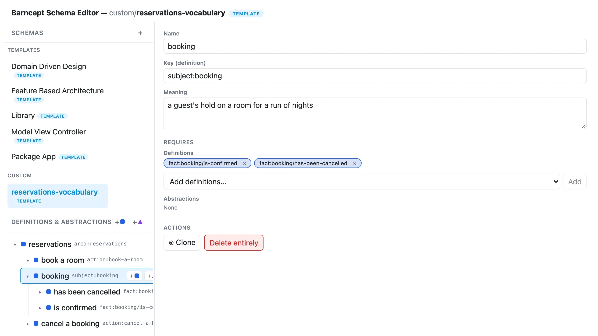
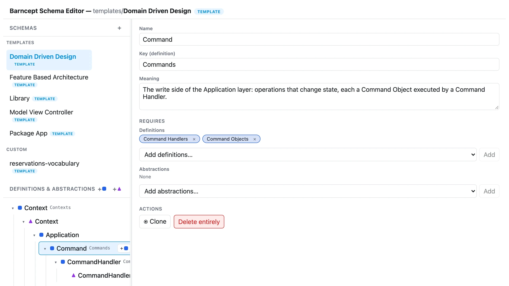

Your understanding outlives your code.
Code is rewritten, frameworks come and go, folders get reshuffled. What lasts is how you understand the domain. Barncept captures that understanding as a graph of linked concepts, each with a plain meaning, so it can be realised in any way you like.

Concepts that explain themselves.
Every concept has a name and a meaning written in plain words, and it’s linked to the concepts it depends on. Months later, anyone can open the graph and understand not just what exists, but what each thing is for.
The words your stories use, organised.
The people, things and actions in your Barnspec stories can be exported as a concept graph in one step. The business’s own vocabulary becomes something you can see whole, reorganise and build on, rather than words scattered across tickets.
Exported from a hotel’s reservation stories
- guestchoosing and securing somewhere to stay
- rooma room the hotel lets to guests
- bookinga guest’s hold on a room for a run of nights
- book a rooman action a guest takes
One model. Any shape.
Barncept never decides what a graph becomes. A folder structure, a diagram and a set of documents are each one possible realisation, never the model itself. Turn the same graph into real folders, an architecture to check code against, or whatever you need next.
Every Barnark architecture template is a Barncept graph, edited in exactly the same way.

How it works underneath.
Everything above, in more detail, for when you want it.
The three kinds of conceptDefinitions, Abstractions and Implementations
- Definition: a concept that can require other concepts beneath it, such as
ApplicationorDomain. - Abstraction: a role that concrete things fulfil, such as
AggregateorCommand. - Implementation: a concrete thing that fulfils one Abstraction, such as
BasketfulfillingAggregate.
The editor marks them with a square, a triangle and a circle.
Templates and custom schemasPortable vocabulary, and the things that use it
A template schema holds only Definitions and Abstractions: a reusable vocabulary. A custom schema adds Implementations, so it can be resolved from a root into a concrete, named tree. A bad schema fails loudly, naming the missing reference or the cycle it found.
Root
|
+--Application
+--DomainRealising a graph as foldersScaffold it, then check it still matches
Barnscaff, Barncept’s companion, turns a resolved graph into real directories and files, and scans an existing folder to check it still matches.
$ vendor/bin/barnscaff scaffold library Root ./generated --apply
$ vendor/bin/barnscaff scan library Root ./generatedFrom PHPSchemas are plain arrays or JSON
$schema = new SchemaFactory()->create($data);
$instance = new ResolverFactory()->create()
->resolve($schema, ImplementationKey::new('Root'));
echo new PresenterFactory()->create()->present($instance);Open your concepts in the browser.
Barncept needs PHP 8.5, Composer and the ds extension. Set up your project once, then open the editor.
$ vendor/bin/barncept init
$ vendor/bin/barncept guiInstallationInstall from Packagist
Require Barncept, its command line and its browser app:
$ composer require rmb32/barncept rmb32/barncept-cli rmb32/barncept-gui